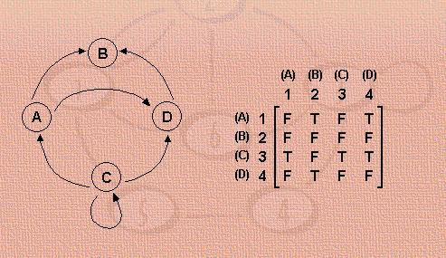
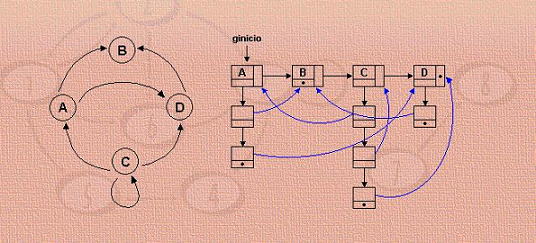
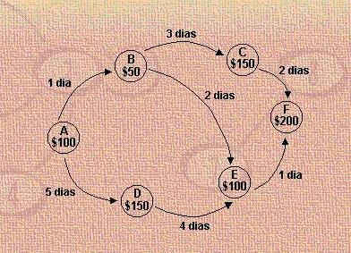

Em aplicações simples, é usual representar-se um grafo através de uma matriz de adjacências. É uma matriz na qual as linhas representam os nós de onde saem os arcos, e as colunas repre-sentam os nós aos quais chegam os arcos. Assim, cada elemento genérico da matriz, m[i,j], será 1 se existe um arco ligando o nó i ao nó j, e será 0 em caso contrário (no desenho abaixo o 0 foi substituído por F (false) e o 1 foi substituído por T (true)).
Para aplicações genéricas, convém usar uma estrutura dinâmica. A forma mais adequada consiste em uma lista em que cada elemento corresponde a um nó, e está ligado a outra lista, cujos elementos contêm ponteiros para os nós adjacentes a ele. A estrutura pode ser definida do seguinte modo:
typedef struct elementoarco {no ginicio;
Nessa estrutura, ginicio é a variável que dá acesso ao grafo, apontando para o início da lista de nós. Os nós e os arcos contêm valores, que estão indicados nos campos valorno e valorarco, que não estão representados na figura abaixo. Ainda nessa estrutura também há dois campos com o nome usado, um para cada os nós e outro para os arcos.
Se o grafo representado for não dirigido, sempre que houver um ponteiro indicando a ligação de um nó A a um nó B, deverá haver também um ponteiro indicando a ligação de B a A.
Para armazenar os dados de um grafo em um arquivo, sugere-se um padrão parecido ao utilizado para listas ligadas a listas. Por exemplo, para o grafo da figura abaixo, o arquivo pode ter a forma indicada abaixo também:
arquivo:
A B C D E F
A 100 2 B 1 D 5
B 50 2 C 3 E 4
C 150 1 F 2
D 150 1 E 4
E 100 1 F 1
F 200 0
Na primeira linha, há uma relação completa de todos os nós. No restante do arquivo, há uma linha para cada nó, com os seguintes campos:
<nó> <valor do nó> <número de nós adjacentes> <nó adjacente1> <valor do arco para o nó adjacente 1> <nó adjacente2> <valor do arco para o nó adjacente 2> ...